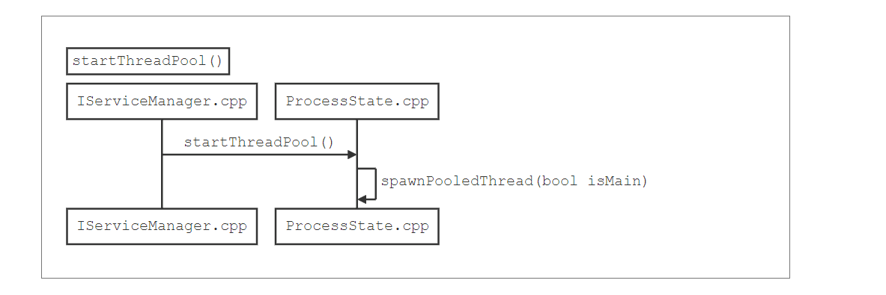
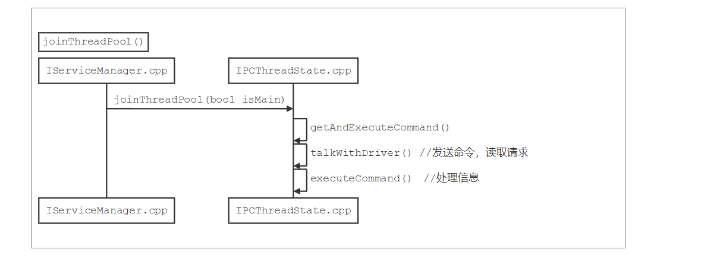

MediaSever理解Binder图解
获取ProcessState实例

向SM注册服务

1 | /* IServiceManager.cpp中 |
注册MediaPlayService


startThreadPool()

joinThreadPool

小结：
有两个线程在为 Service 服务
startThreadPool中新启动的线程通过joinThreadPool来读取binder设备，查看是否有请求主线程也调用
joinThreadPool来读取binder设备，查看是都有请求。所以，binder是支持多线程操作
标注
- 基于Android版本 5.1_LMY47D
- 本文链接：https://www.wl960127.top/posts/49536/
- 版权声明：本站内容均为个人学习笔记,不涉及商业用途，仅提供学习参考,第三方摘录已署名链接,未署名请评论添加,转载署名来源即可。
分享